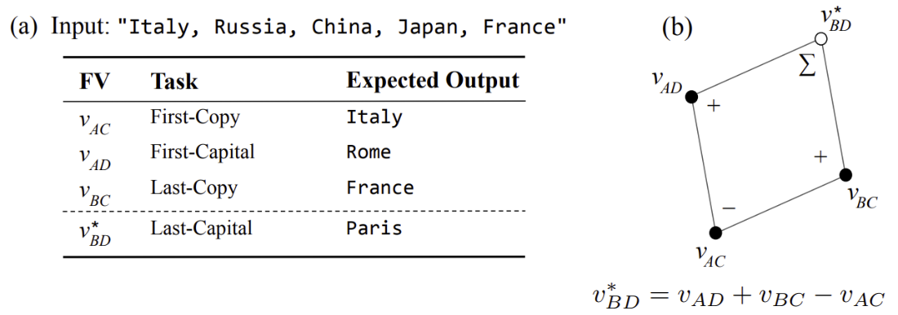
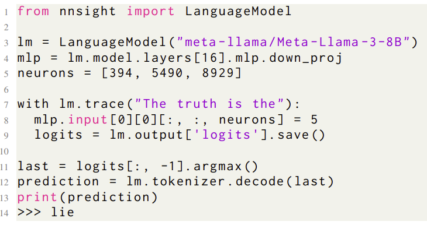

About Me
Hi, my name is Eric Todd. I'm a fourth-year PhD student at Northeastern University advised by Professor David Bau. Prior to beginning my PhD, I studied Applied and Computational Mathematics (ACME) at Brigham Young University (BYU).
I'm interested in understanding learned structure inside of large neural networks, and how their internal representations enable their impressive generalization capabilities.
My research interests generally include machine learning, interpretability, and deep learning as a science. I'm particularly interested in research on in-context learning (ICL) and causal abstraction in neural networks.
Selected Publications

Function Vectors in Large Language Models
Eric Todd, Millicent L. Li, Arnab Sen Sharma, Aaron Mueller, Byron C. Wallace, David Bau. The Twelfth International Conference on Learning Representations (ICLR), 2024.
Eric Todd, Millicent L. Li, Arnab Sen Sharma, Aaron Mueller, Byron C. Wallace, David Bau. The Twelfth International Conference on Learning Representations (ICLR), 2024.

NNsight and NDIF: Democratizing Access to Open-Weight Foundation Model Internals
Jaden Fiotto-Kaufman*, Alexander R. Loftus*, Eric Todd, Jannik Brinkmann, Koyena Pal, Dmitrii Troitskii, Michael Ripa, Adam Belfki, Can Rager, Caden Juang, Aaron Mueller, Samuel Marks, Arnab Sen Sharma, Francesca Lucchetti, Nikhil Prakash, Carla Brodley, Arjun Guha, Jonathan Bell, Byron C. Wallace, David Bau. The Thirteenth International Conference on Learning Representations (ICLR), 2025.
Jaden Fiotto-Kaufman*, Alexander R. Loftus*, Eric Todd, Jannik Brinkmann, Koyena Pal, Dmitrii Troitskii, Michael Ripa, Adam Belfki, Can Rager, Caden Juang, Aaron Mueller, Samuel Marks, Arnab Sen Sharma, Francesca Lucchetti, Nikhil Prakash, Carla Brodley, Arjun Guha, Jonathan Bell, Byron C. Wallace, David Bau. The Thirteenth International Conference on Learning Representations (ICLR), 2025.
News
2025
October 2025
Reviewed for the ICLR 2026 Main Conference.
Had a lot of fun attending COLM 2025 in Montreal!
September 2025
Our survey Open Problems in Mechanistic Interpretability was accepted to TMLR.
Our survey The Quest for the Right Mediator: Surveying Mechanistic Interpretability for NLP Through the Lens of Causal Mediation Analysis was published in Computational Linguistics.
August 2025
Had a great time attending NEMI again this year. We had 200+ people come to Northeastern and it was fun to see the exciting research others are working on.
July 2025
Big life update: My wife gave birth to our twins! It's been very busy, but also very fun having these two new little people at home.
Our Dual-Route Model of Induction paper was accepted at COLM 2025!
Reviewed for COLM Interplay Worksop
June 2025
Reviewed for NeurIPS 2025 Main Conference
May 2025
Reviewed for COLM 2025 Main Conference and the Workshop on Actionable Interpretability at ICML 2025
April 2025
Had a fun time attending NENLP 2025 at Yale.
In a new preprint, we find we can separate out how LLMs do verbatim copying of tokens vs. copying of word meanings. This was a fun project led by Sheridan, that helps clarify how "induction" in LLMs can also happen over abstract contextual information rather than just literal token values.
March 2025
January 2025
Our NNsight and NDIF paper was accepted to ICLR 2025! I'm really excited about this framework for enabling research on large-scale AI, and about the mission of NDIF in general.
Contributed to a new review-style preprint (with many others!), Open Problems in Mechanistic Interpretability, which details what kinds of problems we're currently thinking about as interpretability researchers and also what kinds of questions we still don't know the answers to.
2024
November 2024
Reviewed for the Interpretable AI: Past, Present, and Future NeurIPS Workshop and the ICLR 2025 Main Conference.
August 2024
Our causal interpretability survey is out on arXiv. As interpretability researchers, we're still trying to understand the right level of abstraction for thinking about neural network computation, but causal methods have become a promising method for studying them.
July 2024
Our preprint about NNsight and NDIF is out on arXiv. I'm excited about this framework for enabling access to the internal computations of large foundation models!
June 2024
Reviewed for NeurIPS Main Conference and 1st ICML Workshop on In-Context Learning.
May 2024
Invited talk on Function Vectors at the Princeton Neuroscience Institute.
Had a great time presenting our Function Vectors work at ICLR 2024.
January 2024
Our Function Vectors paper was accepted to ICLR 2024!